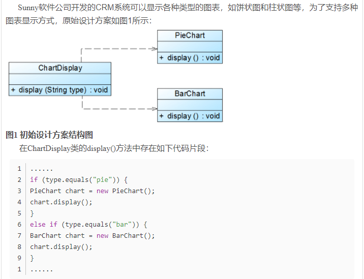
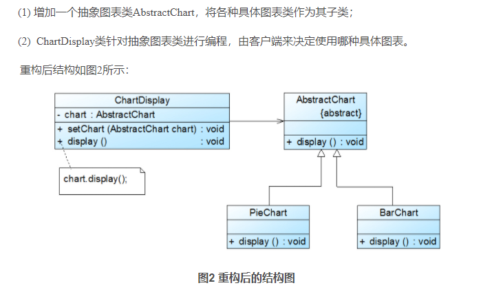

设计模式
设计模式
设计模式是一套被反复使用的、多数人知晓的、经过分类编目的、代码设计经验的总结。使用设计模式是为了重用代码、让代码更容易被他人理解、保证代码可靠性。
GOF（四人帮，全拼 Gang of Four）。他们所提出的设计模式主要是基于以下的面向对象设计原则。
- 对接口编程而不是对实现编程。
- 优先使用对象组合而不是继承。
| 序号 | 模式 & 描述 | 包括 |
|---|---|---|
| 1 | 创建型模式 这些设计模式提供了一种在创建对象的同时隐藏创建逻辑的方式，而不是使用 new 运算符直接实例化对象。这使得程序在判断针对某个给定实例需要创建哪些对象时更加灵活。 | 工厂模式（Factory Pattern）抽象工厂模式（Abstract Factory Pattern）单例模式（Singleton Pattern）建造者模式（Builder Pattern）原型模式（Prototype Pattern） |
| 2 | 结构型模式 这些设计模式关注类和对象的组合。继承的概念被用来组合接口和定义组合对象获得新功能的方式。 | 适配器模式（Adapter Pattern）桥接模式（Bridge Pattern）过滤器模式（Filter、Criteria Pattern）组合模式（Composite Pattern）装饰器模式（Decorator Pattern）外观模式（Facade Pattern）享元模式（Flyweight Pattern）代理模式（Proxy Pattern） |
| 3 | 行为型模式 这些设计模式特别关注对象之间的通信。 | 责任链模式（Chain of Responsibility Pattern）命令模式（Command Pattern）解释器模式（Interpreter Pattern）迭代器模式（Iterator Pattern）中介者模式（Mediator Pattern）备忘录模式（Memento Pattern）观察者模式（Observer Pattern）状态模式（State Pattern）空对象模式（Null Object Pattern）策略模式（Strategy Pattern）模板模式（Template Pattern）访问者模式（Visitor Pattern） |
| 4 | J2EE 模式 这些设计模式特别关注表示层。这些模式是由 Sun Java Center 鉴定的。 | MVC 模式（MVC Pattern）业务代表模式（Business Delegate Pattern）组合实体模式（Composite Entity Pattern）数据访问对象模式（Data Access Object Pattern）前端控制器模式（Front Controller Pattern）拦截过滤器模式（Intercepting Filter Pattern）服务定位器模式（Service Locator Pattern）传输对象模式（Transfer Object Pattern） |
六大原则
单一职责原则（Single Responsibility Principle）
单一职责原则的定义是：应该有且仅有一个原因引起类的变更。
单一职责原则不仅适用于接口和类，也适用于方法。一个方法尽可能只做一件事。
开闭原则（Open Closed Principle）
https://blog.csdn.net/lovelion/article/details/7537584
开闭原则是指一个软件实体如类、模块和函数应该对扩展开放，对修改关闭。软件实体应尽量在不修改原有代码的情况下进行扩展。
软件实体可以指一个软件模块，一个由多个类组成的局部结构或一个独立的类。
抽象化是开闭原则的关键——Q：什么是抽象呢？
例：

新加一个图表就要新加if条件判断逻辑。
重构：

里氏替换原则（Liskov Substitution Principle）
单例模式
这种模式涉及到一个单一的类，该类负责创建自己的对象，同时确保只有单个对象被创建。这个类提供了一种访问其唯一的对象的方式，可以直接访问，不需要实例化该类的对象。
注意：
- 单例类只能有一个实例。
- 单例类必须自己创建自己的唯一实例。
- 单例类必须给所有其他对象提供这一实例。
优点：
- 内存里只有一个实例，减少了内存开销。（频繁的创建和销毁实例）
- 避免对资源的多重占用。（比如写文件操作）
缺点：
- 没有接口，不能继承，与单一职责原则冲突，一个类应该只关心内部逻辑，而不关心外面怎么样来实例化。
C++实现
懒汉式（lazy-Initialzation）
直到使用时才实例化对象，即直到调用GetInstance时才new一个对象。
class Singleton
{
public:
static Singleton* GetInstance() //公有静态方法，获取该实例
{
if(pInstance == nullptr) //判断是否第一次调用
pInstance = new Singleton();
return pInstance;
}
private:
Singleton(); //将构造函数设为私有
static Singleton *pInstance; //私有静态指针变量，指向唯一实例
};
构造函数是私有的，导致在外部任何尝试创建实例的尝试都会失败。
禁止拷贝和赋值。
唯一方法是通过调用公有静态函数GetInstance，返回的实例是该函数首次被访问时创建的。
系统会在程序结束后释放所有全局变量并析构所有类的静态对象。
饿汉式
//Singleton.h
class Singleton
{
public:
static Singleton* getInstance();
private:
Singleton();
Singleton(const Singleton&);
Singleton& operator=(const Singleton&);
static Singleton* instance_;
};
//Singleton.cpp
#include "Singleton.h"
Singleton* Singleton::instance_ = new Singleton();
Singleton::Singleton() {}
Singleton* Singleton::getInstance()
{
return instance_;
}
与懒汉式区别在于，在全局作用域进行单例类的实例化，并且此实例初始化单例类的静态成员指针。
Meyers's Singleton
class Singleton
{
public:
Singleton(const Singleton&)=delete;
Singleton& operator=(const Singleton&)=delete;
~Singleton(){}；
static Singleton& GetInstance()
{
static Singleton instance;
return instance;
}
private:
Singleton()；
};
static Singleton* GetInstance()
{
static Singleton instance;
return &instance;
}
线程安全的单例模式
Singleton* Singleton::GetInstance()
{
lock(); //上锁
if (NULL == instance)
{
instance = new Singleton();
}
unlock();
return instance;
}
每次获取实例的时候都要先上锁，之后在解锁，如果有很多线程的话，可能会造成大量线程阻塞。
Singleton* Singleton::GetInstance()
{
if (NULL == instance)
{
lock(); //上锁
if (NULL == instance)
{
instance = new Singleton();
}
unlock();
}
return instance;
}
改进后，绝大多数情况下都是直接返回实例，只有在没有实例的时候，才会上锁、解锁。
How should it be used
You need to have one and only one object of a type in system 你需要系统中只有唯一一个实例存在的类的全局变量的时候才使用单例。
How to create the best singleton:
- The smaller, the better. I am a minimalist
- Make sure it is thread safe
- Make sure it is never null
- Make sure it is created only once
- Lazy or system initialization? Up to your requirements
- Sometimes the OS or the JVM creates singletons for you (e.g. in Java every class definition is a singleton)
- Provide a destructor or somehow figure out how to dispose resources
- Use little memory 越小越好，越简单越好，线程安全，内存不泄露
“Singleton仅仅是一个包装好的全局变量，那你能说说它和全局变量的相同与不同么？”
单例可以说是全局变量的替代品。其拥有全局变量的众多特点：
全局可见且贯穿应用程序的整个生命周期。除此之外，单例模式还拥有一些全局变量所不具有的性质：同一类型的对象实例只能有一个，同时适当的实现还拥有延迟初始化（Lazy）的功能，可以避免耗时的全局变量初始化所导致的启动速度不佳等问题。要说明的是，Singleton的最主要目的并不是作为一个全局变量使用，而是保证类型实例有且仅有一个。它所具有的全局访问特性仅仅是它的一个副作用。但正是这个副作用使它更类似于包装好的全局变量，从而允许各部分代码对其直接进行操作。软件开发人员需要通过仔细地阅读各部分对其进行操作的代码才能了解其真正的使用方式，而不能通过接口得到组件依赖性等信息。如果Singleton记录了程序的运行状态，那么该状态将是一个全局状态。各个组件对其进行操作的调用时序将变得十分重要，从而使各个组件之间存在着一种隐式的依赖。
对象释放问题
程序中只有new没有delete
A：一般情况下单例模式的实例是常驻内存的，因此不需要手动释放，如果的确需要释放实例占用的内存，一定不能在单例内的析构函数中进行delete操作，这样会造成无限循环。
如果在类的析构函数中有必要的操作，例如关闭文件，释放外部资源，需要正常删除实例。
bad idea：可以在程序结束时调用GetInstance，然后delete，但是delete之后无法保证后面还有没有人调用GetInstance。
一个妥善的方法是让这个类自己知道在合适的时候把自己删除，或者说把删除自己的操作挂在操作系统中的某个合适的点上，使其在恰当的时候被自动执行。 程序在结束的时候，系统会自动析构所有的全局变量。事实上，系统也会析构所有的类的静态成员变量，就像这些静态成员也是全局变量一样。利用这个特征，我们可以在单例类中定义一个这样的静态成员变量，而它的唯一工作就是在析构函数中删除单例类的实例。如下面的代码中的CGarbo类（Garbo意为垃圾工人）：
class CSingleton
{
private:
CSingleton()
{
}
static CSingleton *m_pInstance;
class CGarbo //它的唯一工作就是在析构函数中删除CSingleton的实例
{
public:
~CGarbo()
{
if(CSingleton::m_pInstance)
delete CSingleton::m_pInstance; // delete
}
};
static CGarbo Garbo; //定义一个静态成员变量，程序结束时，系统会自动调用它的析构函数
public:
static CSingleton * GetInstance()
{
if(m_pInstance == NULL) //判断是否第一次调用
m_pInstance = new CSingleton();
return m_pInstance;
}
};
Reference：
https://www.cnblogs.com/leaves1024/p/10985599.html
https://www.cnblogs.com/faith0217/articles/4083476.html
https://zhuanlan.zhihu.com/p/37469260
工厂模式
简单工厂模式
工厂类：创建指定具体实例对象的接口
抽象产品类：具体产品类的父类或接口
具体产品类：工厂类创建的对象是具体产品类的实例
特点：工厂类封装了创建产品对象的函数
缺点：扩展差，新增产品的时候需要修改工厂类
例：
// 鞋子抽象类
class Shoes //interface
{
public:
virtual ~Shoes() {}
virtual void Show() = 0;
};
// 耐克鞋子
class NiKeShoes : public Shoes
{
public:
void Show()
{
std::cout << "我是耐克球鞋，我的广告语：Just do it" << std::endl;
}
};
// 阿迪达斯鞋子
class AdidasShoes : public Shoes
{
public:
void Show()
{
std::cout << "我是阿迪达斯球鞋，我的广告语:Impossible is nothing" << std::endl;
}
};
// 李宁鞋子
class LiNingShoes : public Shoes
{
public:
void Show()
{
std::cout << "我是李宁球鞋，我的广告语：Everything is possible" << std::endl;
}
};
//ShoesFactory为工厂类，类里实现根据鞋子类型创建对应鞋子产品对象的CreateShoes(SHOES_TYPE type)函数。
enum SHOES_TYPE
{
NIKE,
LINING,
ADIDAS
};
// 总鞋厂
class ShoesFactory
{
public:
// 根据鞋子类型创建对应的鞋子对象
Shoes *CreateShoes(SHOES_TYPE type)
{
switch (type)
{
case NIKE:
return new NiKeShoes();
break;
case LINING:
return new LiNingShoes();
break;
case ADIDAS:
return new AdidasShoes();
break;
default:
return NULL;
break;
}
}
};
int main()
{
// 构造工厂对象
ShoesFactory shoesFactory;
// 从鞋工厂对象创建阿迪达斯鞋对象
Shoes *pNikeShoes = shoesFactory.CreateShoes(NIKE);
if (pNikeShoes != NULL)
{
// 耐克球鞋广告喊起
pNikeShoes->Show();
// 释放资源
delete pNikeShoes;
pNikeShoes = NULL;
}
// 从鞋工厂对象创建阿迪达斯鞋对象
Shoes *pLiNingShoes = shoesFactory.CreateShoes(LINING);
if (pLiNingShoes != NULL)
{
// 李宁球鞋广告喊起
pLiNingShoes->Show();
// 释放资源
delete pLiNingShoes;
pLiNingShoes = NULL;
}
// 从鞋工厂对象创建阿迪达斯鞋对象
Shoes *pAdidasShoes = shoesFactory.CreateShoes(ADIDAS);
if (pAdidasShoes != NULL)
{
// 阿迪达斯球鞋广告喊起
pAdidasShoes->Show();
// 释放资源
delete pAdidasShoes;
pAdidasShoes = NULL;
}
return 0;
}
工厂模式
情景：为了生产某种鞋子，需要为不同牌子的鞋开设独立的生产线。
抽象工厂类：提供创建具体产品类的接口
具体工厂类：继承抽象工厂，实现创建具体产品对象
抽象产品类：具体产品类的接口
具体产品类：具体工厂要创建的对象
特点：工厂部分抽象出了接口，实现交给子类
缺点：新增产品时，要增加对应产品的具体工厂类。
// 总鞋厂
class ShoesFactory // Factory interface
{
public:
virtual Shoes *CreateShoes() = 0;
virtual ~ShoesFactory() {}
};
// 耐克生产者/生产链
class NiKeProducer : public ShoesFactory
{
public:
Shoes *CreateShoes()
{
return new NiKeShoes();
}
};
// 阿迪达斯生产者/生产链
class AdidasProducer : public ShoesFactory
{
public:
Shoes *CreateShoes()
{
return new AdidasShoes();
}
};
// 李宁生产者/生产链
class LiNingProducer : public ShoesFactory
{
public:
Shoes *CreateShoes()
{
return new LiNingShoes();
}
};
int main()
{
// ================ 生产耐克流程 ==================== //
// 鞋厂开设耐克生产线
ShoesFactory *niKeProducer = new NiKeProducer();
// 耐克生产线产出球鞋
Shoes *nikeShoes = niKeProducer->CreateShoes();
// 耐克球鞋广告喊起
nikeShoes->Show();
// 释放资源
delete nikeShoes;
delete niKeProducer;
// ================ 生产阿迪达斯流程 ==================== //
// 鞋厂开设阿迪达斯生产者
ShoesFactory *adidasProducer = new AdidasProducer();
// 阿迪达斯生产线产出球鞋
Shoes *adidasShoes = adidasProducer->CreateShoes();
// 阿迪达斯球鞋广喊起
adidasShoes->Show();
// 释放资源
delete adidasShoes;
delete adidasProducer;
return 0;
}
抽象工厂
情景：现在工厂不止产鞋子了，衣服裤子一起产了。
结构与工厂模式一样。
// 基类 衣服
class Clothe
{
public:
virtual void Show() = 0;
virtual ~Clothe() {}
};
// 耐克衣服
class NiKeClothe : public Clothe
{
public:
void Show()
{
std::cout << "我是耐克衣服，时尚我最在行！" << std::endl;
}
};
// 基类 鞋子
class Shoes
{
public:
virtual void Show() = 0;
virtual ~Shoes() {}
};
// 耐克鞋子
class NiKeShoes : public Shoes
{
public:
void Show()
{
std::cout << "我是耐克球鞋，让你酷起来！" << std::endl;
}
};
//Factory为抽象工厂，提供了创建鞋子CreateShoes()和衣服产品CreateClothe()对象的接口。
//NiKeProducer为具体工厂，实现了创建耐克鞋子和耐克衣服的方式。
// 总厂
class Factory
{
public:
virtual Shoes *CreateShoes() = 0;
virtual Clothe *CreateClothe() = 0;
virtual ~Factory() {}
};
// 耐克生产者/生产链
class NiKeProducer : public Factory
{
public:
Shoes *CreateShoes()
{
return new NiKeShoes();
}
Clothe *CreateClothe()
{
return new NiKeClothe();
}
};
int main()
{
// ================ 生产耐克流程 ==================== //
// 鞋厂开设耐克生产线
Factory *niKeProducer = new NiKeProducer();
// 耐克生产线产出球鞋
Shoes *nikeShoes = niKeProducer->CreateShoes();
// 耐克生产线产出衣服
Clothe *nikeClothe = niKeProducer->CreateClothe();
// 耐克球鞋广告喊起
nikeShoes->Show();
// 耐克衣服广告喊起
nikeClothe->Show();
// 释放资源
delete nikeShoes;
delete nikeClothe;
delete niKeProducer;
return 0;
}
小结：
简单工厂模式，违背了开闭原则。
工厂和抽象工厂，增加产品类时需要增加对应的具体工厂类。
Reference：
https://zhuanlan.zhihu.com/p/83535678
https://zhuanlan.zhihu.com/p/83537599
MVC模式
Model-View-Controller(模型-视图-控制器模式)
- Model（模型） - 模型代表一个存取数据的对象或 JAVA POJO。它也可以带有逻辑，在数据变化时更新控制器。
- View（视图） - 视图代表模型包含的数据的可视化。
- Controller（控制器） - 控制器作用于模型和视图上。它控制数据流向模型对象，并在数据变化时更新视图。它使视图与模型分离开。

模型（Model）：封装的是数据源和所有基于对这些数据的操作。在一个组件中，Model往往表示组件的状态和操作状态的方法。 视图（View）：封装的是对数据源Model的一种显示。一个模型可以由多个视图，而一个视图理论上也可以同不同的模型关联起来。 控制器（Control）：封装的是外界作用于模型的操作。通常，这些操作会转发到模型上，并调用模型中相应的一个或者多个方法。一般Controller在Model和View之间起到了沟通的作用，处理用户在View上的输入，并转发给Model。这样Model和View两者之间可以做到松散耦合，甚至可以彼此不知道对方，而由Controller连接起这两个部分。
在设计模式中，MVC实际上是一个比较高层的模式，它由多个更基本的设计模式组合而成，Model-View的关系实际上是Observer模式，模型的状态和试图的显示相互响应，而View-Controller则是由Strategy模式所描述的，View用一个特定的Controller的实例来实现一个特定的响应策略，更换不同的Controller，可以改变View对用户输入的响应。而其它的一些设计模式也很容易组合到这个体系中。比如，通过Composite模式，可以将多个View嵌套组合起来；通过FactoryMethod模式来指定View的Controller，等等。在GOF书的 Introduction中，有一小节是“Design Patterns in Smalltalk MVC”即介绍在MVC模式里用到的设计模式。它大概向我们传达了这样的信息：合成模式+策略模式+观察者模式约等于MVC模式（当然MVC模式要多一些 东西）。
优点：使用MVC的好处，一方面，分离数据和其表示，使得添加或者删除一个用户视图变得很容易，甚至可以在程序执行时动态的进行。Model和View能够单独的开发，增加了程序了可维护性，可扩展性，并使测试变得更为容易。另一方面，将控制逻辑和表现界面分离，允许程序能够在运行时根据工作流、用户习惯或者模型状态来动态选择不同的用户界面。因此，MVC模式广泛用于Web程序、GUI程序的架构。